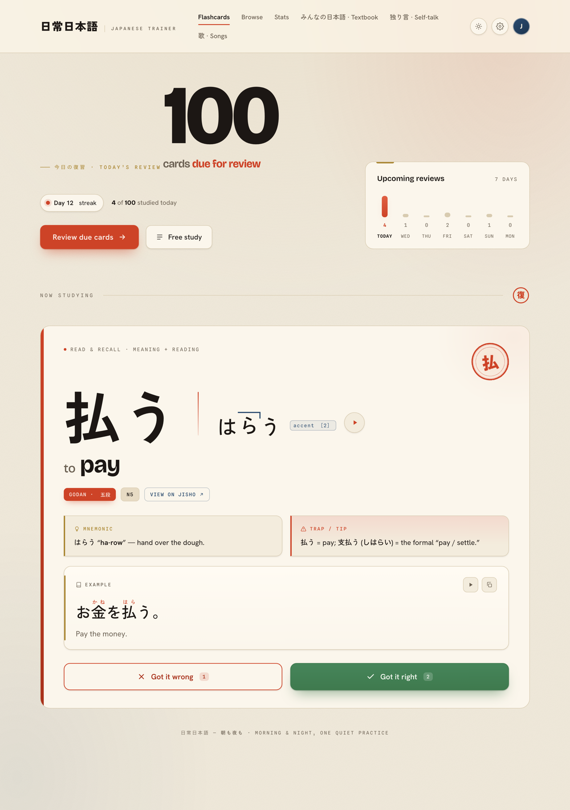
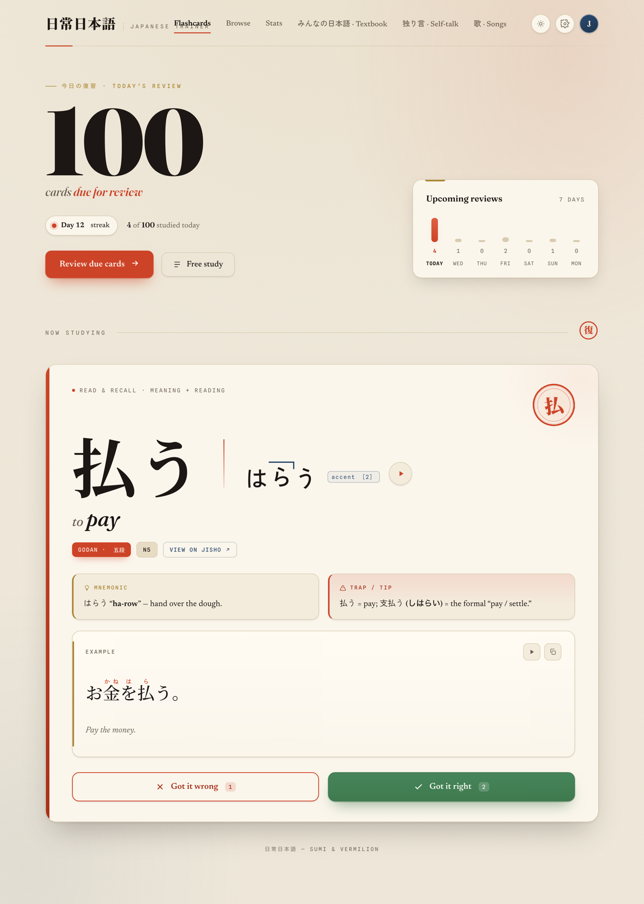
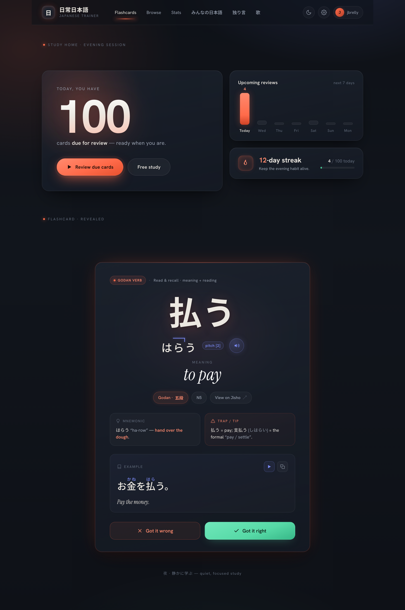
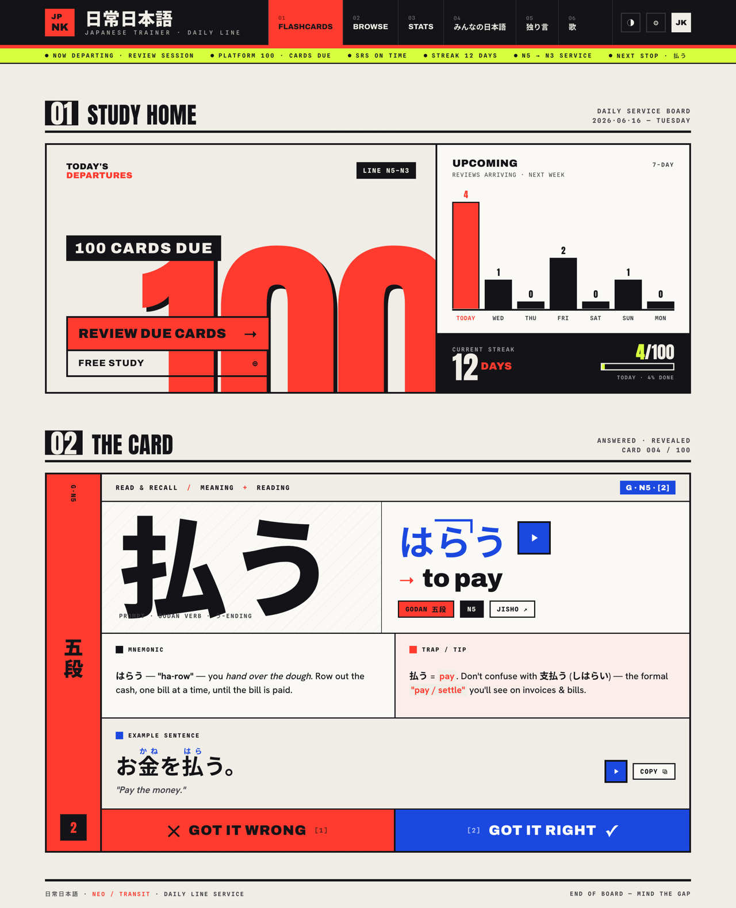
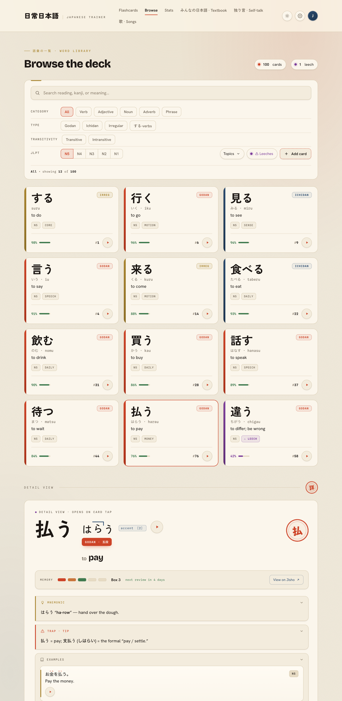
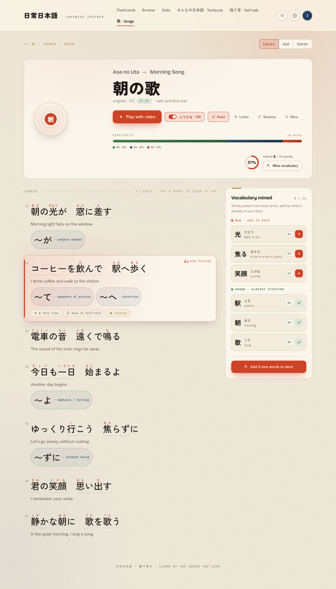
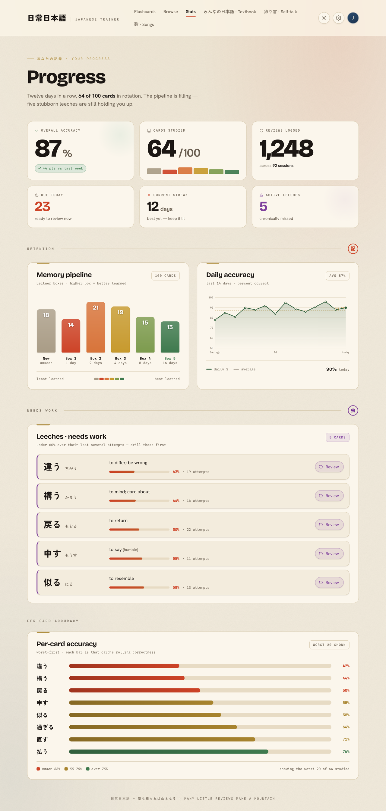
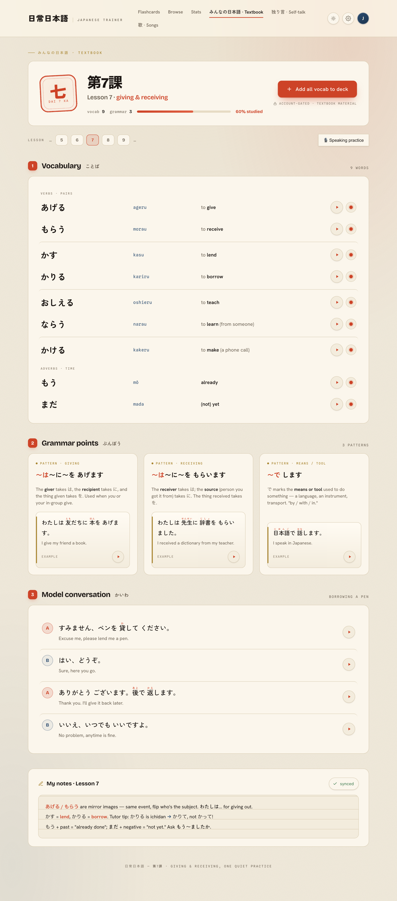
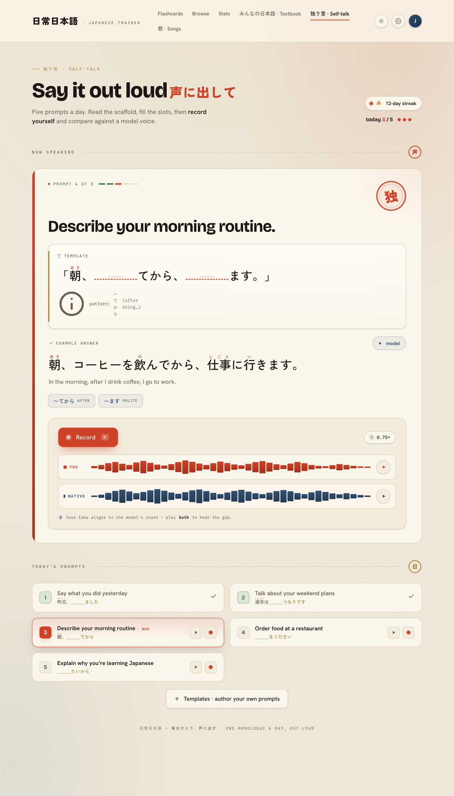

Four self-contained directions, each rendering the same content — the study home and the core revealed flashcard for 払う — so the feel is directly comparable. Keep the functional color, the hanko, the pitch accent; lose the flat, tiny, monospace-everywhere austerity.

One system, two themes: warm editorial light + an atmospheric warm dark ("candle-lit washi at night"). Working ☼/☾ toggle.
Open live mock →
Warm premium editorial — elevates the existing washi/ink DNA. Fraunces display, a round 払 hanko seal, paper grain, liftable shadows.
Open live mock →
Soft, dark-first, modern-premium calm. Atmospheric glows, frosted-glass cards, a coral jewel accent, the meaning set in serif.
Open live mock →
Bold Tokyo transit-signage energy. Giant Anton "100" bleeding off a departures board, station-code chips, signal red/blue blocks.
Open live mock →Carrying Day/Night beyond the hero — now all-sans (Bricolage Grotesque + Hanken Grotesk, no serif), every surface on a shared system.css with a working ☼/☾ toggle.
Study home + the revealed flashcard. Bricolage "100", hanko seal, pitch-accent, the godan spine, day/night.
Open live mock →
Full filter bar + a color-coded verb grid (godan/ichidan/irregular/leech) and an inline card detail with memory pips.
Open live mock →
The lyric viewer: furigana, per-line translation, grammar chips, a now-playing line, and a mined-vocab rail. Best dark-mode showcase.
Open live mock →
Hero metric cards, the Leitner "memory pipeline" over the functional ramp, a glowing daily-accuracy line, the leech list, and per-card bars.
Open live mock →
Lesson 7 dashboard: vocab with native audio + record, grammar points, a model conversation, and synced notes.
Open live mock →
Output practice: a prompt with a template scaffold, a you-vs-native record-and-compare rig, and the day's prompt rail.
Open live mock →日常日本語 · redesign explorations — see README.md for the full writeup. Mocks only; no production code touched.